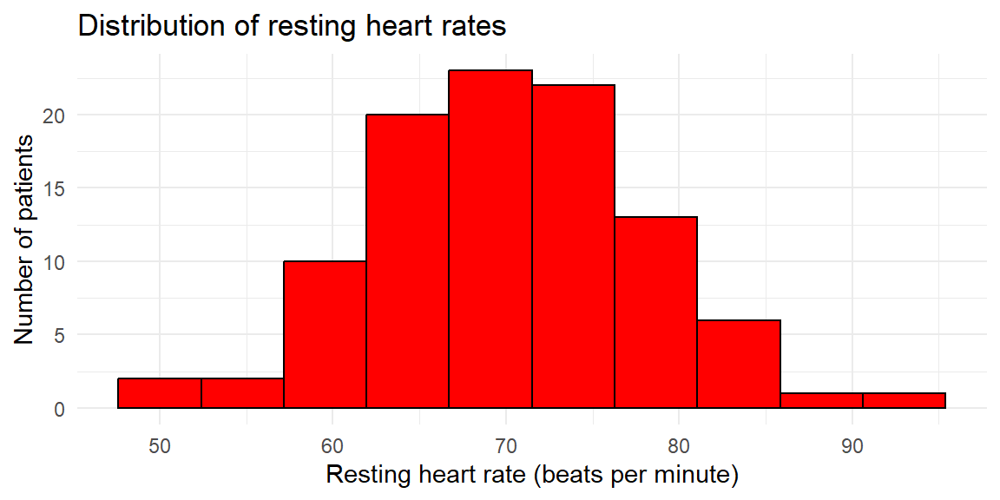
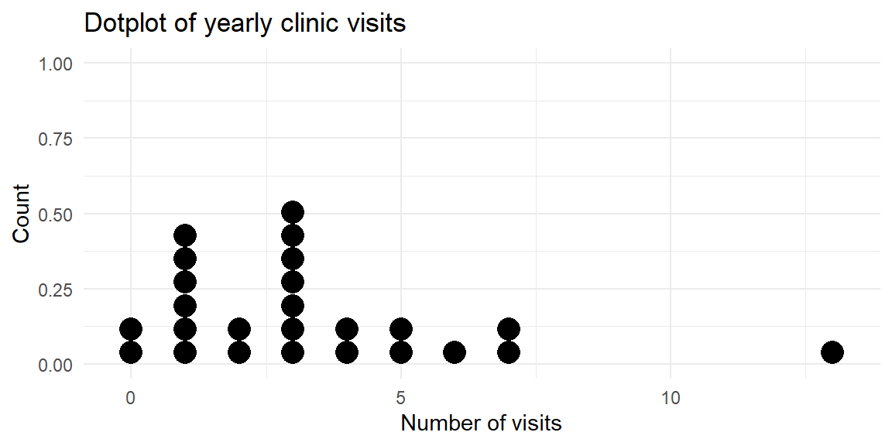

| response | frequency | relative_frequency |
|---|---|---|
| Back pain | 9 | 0.3000000 |
| Fatigue | 9 | 0.3000000 |
| Headache | 8 | 0.2666667 |
| Nausea | 4 | 0.1333333 |

“The greatest value of a picture is when it forces us to notice what we never expected to see.” – John Tukey
Guiding question: Which graphs work best for categorical data?
When you collect data that fall into groups—like preferred streaming service, political affiliation, or type of pet—the first step is to count how many observations fall into each category. Those counts form the backbone of both tables and graphs for categorical data. In this section we’ll learn how to build simple frequency tables, translate them into proportions or percentages, and organize two categorical variables together in a two‑way table. Along the way we’ll see when different visual summaries make sense and preview bar and pie charts (covered in detail in Section 3.2).
A
Sometimes absolute counts aren’t enough—especially when comparing samples of different sizes. A
Imagine you survey 30 patients at a local clinic about the primary symptom that brought them in. You record four categories: “Headache,” “Back pain,” “Fatigue,” and “Nausea.” We can organize the responses in a simple table of counts and proportions. Below we simulate such a survey and display the results.
| response | frequency | relative_frequency |
|---|---|---|
| Back pain | 9 | 0.3000000 |
| Fatigue | 9 | 0.3000000 |
| Headache | 8 | 0.2666667 |
| Nausea | 4 | 0.1333333 |
The table lists the four categories in alphabetical order with their counts and relative frequencies. For instance, if 8 of the 30 patients reported “Headache,” the relative frequency of “Headache” is \(8/30 \approx 0.27\). The accompanying bar chart gives a visual sense of the same information: each bar’s height corresponds to a category’s frequency, and the bars are separated to emphasize that the categories have no inherent order. In practice you might reorder the bars to make the graph easier to read—perhaps putting the largest category first.
Sometimes you want to highlight the few categories that account for most of the observations. A Pareto chart is a bar chart arranged in descending order of frequency and often paired with a cumulative percentage line. It helps you identify the “vital few and trivial many” in quality control and business applications. Pareto charts are useful when there are many categories and you want to focus attention on the most common causes or responses.
In JMP Pro 17 you can create a frequency table by selecting Analyze → Distribution, assigning your categorical variable to the X role, and examining the resulting counts. To add relative frequencies, use the red triangle menu (▸) to choose Display Options → Show Percent. JMP’s Graph Builder will automatically construct a bar chart when you drag a categorical variable to the X‑axis and the count statistic to the Y‑axis.
What if you have two categorical variables and want to see how they interact? A
Suppose we collect data on the same symptom question but also record each patient’s age group: “Under 30,” “30–50,” or “Over 50.” We can summarize the joint distribution in a two‑way table.
| age_group | Back pain | Fatigue | Headache | Nausea |
|---|---|---|---|---|
| 30–50 | 3 | 4 | 5 | 3 |
| Over 50 | 2 | 3 | 1 | 0 |
| Under 30 | 4 | 2 | 2 | 1 |
Each cell in the table shows the number of patients who fall into the corresponding combination of age group and symptom. We can also compute row or column relative frequencies to see percentages within each group; for example, dividing each row by its total gives the distribution of symptoms within each age group. Contingency tables allow us to see whether symptom patterns differ across age groups and serve as input for clustered or stacked bar charts (discussed in Section 3.2).
Because categorical variables can have different numbers of levels and sample sizes can vary, relative frequencies are essential for fair comparisons. Reporting only counts can be misleading: 20 supporters of a movie genre in a survey of 50 people represent a large fraction, while 20 supporters in a survey of 500 people represent a much smaller fraction. Percentages standardize the scale.
When displaying percentages, make sure they add to 100%. In a pie chart (a circular graph we’ll describe in the next section), each slice represents a category’s percentage of the whole. Pie charts are useful for showing how the total is divided among categories, but they become cluttered with too many slices. Bar charts are more flexible: you can reorder the bars, show counts or percentages, and compare multiple groups using side‑by‑side or stacked bars.
In JMP, tables and graphs for categorical variables are straightforward:
| Keyword | Definition |
|---|---|
| Frequency table | A table that lists each category of a variable and the number of observations in that category. |
| Relative frequency | The proportion or percentage of observations in a category, equal to the category’s count divided by the total count. |
| Relative frequency table | A frequency table with an additional column showing the relative frequency of each category. |
| Two‑way (contingency) table | A table that displays the counts for each combination of levels of two categorical variable. |
In a survey of 80 households, 32 own a dog, 20 own a cat, 12 own both, and the remainder own no pets. Construct a frequency table that shows the number and percentage of households in each pet ownership category (Dog only, Cat only, Both, None). Which visualization—a bar chart or a pie chart—would you choose, and why?
Explain the difference between a frequency table and a relative frequency table. In what situations is it more informative to look at relative frequencies rather than absolute frequencies?
What is a two‑way (contingency) table? Describe a scenario where a two‑way table could help you explore the relationship between two categorical variables.
Bar charts have spaces between bars and can be drawn in any order. Why are these design choices appropriate for categorical variables? What might go wrong if you drew the bars touching or forced them into a numerical order?
Pet ownership table. The four categories and their counts are: Dog only (20), Cat only (8), Both (12), None (40). The total number of households is 80. The relative frequencies are 25% dog only, 10% cat only, 15% both, and 50% none. A bar chart would be preferable here because it allows you to order the bars from most to least common and makes it easy to compare magnitudes. A pie chart could work for four categories, but it becomes harder to read when slices are similar in size or when there are many categories.
Frequency vs. relative frequency. A frequency table reports the counts of observations in each category. A relative frequency table adds a column showing the proportion or percentage of observations in each category. Relative frequencies are more informative when comparing groups of different sizes or when you want to focus on the distribution rather than the sample size—for example, comparing survey results from two classes of different sizes.
Contingency table example. A two‑way table displays counts for each combination of levels of two categorical variable. For instance, you could record whether each patient in a clinic has insurance (Yes/No) and whether they arrived on time (On time/Late). A contingency table would show how many patients fall into each combination (e.g., insured & on time, insured & late, uninsured & on time, uninsured & late), helping you explore whether punctuality differs by insurance status.
Design choices. Categories have no intrinsic numeric order, so bars in a bar chart can be arranged in any order without misrepresenting the data. Leaving space between bars reinforces that the categories are distinct and unordered. If you drew the bars touching, it might suggest a continuous scale (like a histogram), which could confuse readers. Forcing categories into a numerical order might imply ranking where none exists.
“`Normally if given a choice between doing something and nothing, I’d choose to do nothing. But I would do something if it helps someone do nothing. I’d work all night if it meant nothing got done.” – Ron Swanson
Guiding question: How do we make clear, truthful bar charts and pie charts?
When you’ve tallied the counts of a categorical variable, your next job is to turn those numbers into a picture. Two of the simplest pictures—bar charts and pie charts—seem deceptively alike: each shows categories and their sizes. But as we’ll see, they serve different purposes and come with different design rules.
As we have already seen in Section 3.1,
Example: distribution of blood types. Suppose a hospital records the blood type (A, B, AB or O) of 200 randomly chosen donors. The counts are shown in the table below along with a bar chart. Notice that the bars are separated and can be reordered to make patterns easy to see.
| type | count | prop |
|---|---|---|
| A | 66 | 0.330 |
| AB | 9 | 0.045 |
| B | 31 | 0.155 |
| O | 94 | 0.470 |
The vertical bar chart emphasizes how common type O is relative to the others. You could flip the axes to make a horizontal bar chart if your category names are long or if you prefer to read labels on the y‑axis.
Design tips for bar charts. A few simple rules help make bar charts honest and clear:
A
Example: reasons for missing an appointment. A dental clinic tracks why patients miss scheduled cleanings. Out of 100 missed appointments, 50 were due to forgetfulness, 20 to fear, 15 to cost, and 15 to other reasons. A pie chart makes the share of each reason obvious.

The slices emphasize that half of the missed appointments were simply forgotten. However, imagine adding three more reasons of similar size. The slices would become crowded and hard to compare. Pie charts work only when the categories sum to a meaningful whole and there are no more than a few slices.
Although you can plot the same data with either chart, they are not interchangeable. Use a bar chart when you want to:
Use a pie chart only when:
When you find yourself squinting at a pie chart to see which slice is bigger, switch to a bar chart; our brains judge lengths more accurately than angles.
Sometimes you have two categorical variables and want to see how their categories interact. We introduced two‑way tables in Section 3.1; here’s how to graph them.
A

In a


Stacked bars are useful when you care about the total across categories, but they hide patterns in the middle segments. In the last plot, you can easily compare the overall emergency visits across departments and the share of fractures, but it’s harder to compare the “other” injuries across departments because their segments float at different heights. If your goal is to compare subgroups, a clustered bar chart is usually better.
In JMP, bar and pie charts live in the Graph Builder. Drag your categorical variable to the X‑axis and drop the N or % statistic onto the Y‑axis to create a bar chart. To cluster by a second categorical variable, drop it in the Group or Overlay zone, and choose Bar (Horizontal) or Bar (Vertical) from the chart palette. To stack, use the Stack option in the legend. To make a pie chart, drag the categorical variable to a blank canvas and choose Pie; JMP will automatically convert counts to percentages and label the slices. Use the red triangle (▸) menu to display data labels, reorder slices, or combine small categories into an “Other” slice.
| Keyword/Concept | Definition or note |
|---|---|
| Bar chart | Graph that displays categories along one axis and uses the length of bars to represent numeric values; great for comparing counts or percentages across categories. |
| Pie chart | Circular chart in which slices represent how a total is divided among categories; appropriate only when values sum to a meaningful whole and the number of categories is small. |
| Clustered (side‑by‑side) bar chart | Bar chart where categories are grouped side by side for levels of a second variable; useful for comparing groups across categories. |
| Stacked bar chart | Bar chart where bars for each subgroup are stacked; shows composition and totals but makes it harder to compare individual segments. |
A clinical trial reports the average pain score (on a 0–10 scale) for three physical therapy programs. Should you use a bar chart or a pie chart? Explain your reasoning.
A nutritionist surveys 500 patients about their preferred breakfast type: cereal, fruit, eggs, or none. The counts are 150, 120, 80, and 150. Sketch how you would display this information with a pie chart. When might a bar chart be preferable?
In a mental health study, participants are classified into stress levels (low, moderate, high) and whether they attended counseling (Yes/No). Which type of bar chart would you use to compare stress levels between counseling and non‑counseling participants? What pattern would indicate that counseling is associated with lower stress?
A bar chart shows the average number of cavities per patient in three dental clinics: 1.2, 1.3 and 1.4 cavities. The y‑axis starts at 1.0. Explain why this design might mislead and how to fix it.
Give two reasons why pie charts often make it harder to compare categories than bar charts.
You should use a bar chart because the numbers represent average pain scores and do not sum to a meaningful whole. Pie charts imply a part‑to‑whole relationship and would be misleading here.
The four breakfast types form parts of the whole sample (500 patients). In a pie chart, the slices would be 30% cereal, 24% fruit, 16% eggs, and 30% none. However, a bar chart may be preferable because it allows you to order the categories from most to least common and makes it easier to compare the cereal and none categories, which are equal in size.
A clustered (side‑by‑side) bar chart would let you compare the counts (or proportions) of low, moderate, and high stress within the counseling and non‑counseling groups. If counseling is associated with lower stress, you would expect the “low” bar to be taller (or the “high” bar shorter) in the counseling group than in the non‑counseling group.
Starting the y‑axis at 1.0 truncates the bars and exaggerates small difference. To avoid misleading readers, start the axis at zero. Alternatively, use a dot plot or annotate the differences directly if the differences are small but meaningful.
First, people judge lengths more accurately than angles; in a pie chart it is hard to gauge the exact size of a slice. Second, when slices are similar in size or there are many categories, comparing slices becomes difficult and the chart becomes cluttered. Bar charts avoid these issues by using a common baseline and allowing many bars.
“It’s not what you look at that matters, it’s what you see.” - Henry David Thoreau
Guiding question: How should we organize quantitative data?
Categorical variables live in their own world of discrete groups, but numerical variables—such as heights, blood pressures, cholesterol levels, or reaction times—can take on a continuum of values. To make sense of a list of numbers, we need to group them in a sensible way. In this section we learn how to organize quantitative data into tables that lay the foundation for graphs like histograms, stem‑and‑leaf plots, and dotplots. These tables help us see where the data concentrate, how spread out they are, and how the numbers accumulate.
A
To build a frequency distribution:
Let’s see these steps with an example from dentistry. Suppose a dental researcher records the number of cavities filled for 40 patients in a clinic over the past month. We want to summarize the distribution of cavities per patient.
| class | frequency |
|---|---|
| (-0.5,0.5] | 6 |
| (0.5,1.5] | 8 |
| (1.5,2.5] | 13 |
| (2.5,3.5] | 7 |
| (3.5,4.5] | 4 |
| (4.5,5.5] | 1 |
| (5.5,6.5] | 1 |
The table lists each class of cavities (0, 1, 2, 3, …) along with the number of patients in that class. For example, if 13 patients had exactly two cavities, the class “(1.5, 2.5]” (interpreted as 2 cavities) would have a frequency of 13. When the data are counts like this, classes of width 1 make sense; for continuous measurements like blood pressure, you would choose wider classes to group the data into ranges.
Raw counts are helpful, but sometimes we want to know what proportion of observations fall into each class. The
We can extend our cavities example to compute relative and cumulative frequencies:
| class | frequency | relative_frequency | cumulative_frequency |
|---|---|---|---|
| (-0.5,0.5] | 6 | 0.150 | 0.150 |
| (0.5,1.5] | 8 | 0.200 | 0.350 |
| (1.5,2.5] | 13 | 0.325 | 0.675 |
| (2.5,3.5] | 7 | 0.175 | 0.850 |
| (3.5,4.5] | 4 | 0.100 | 0.950 |
| (4.5,5.5] | 1 | 0.025 | 0.975 |
| (5.5,6.5] | 1 | 0.025 | 1.000 |

The cumulative frequency column increases steadily and reaches 1 at the end of the table. A graph of cumulative frequencies, called an
Selecting an appropriate number of classes is more art than science, but a few guidelines help. Many textbooks suggest between 5 and 20 classes; an alternative rule of thumb for histograms is to use 5 to 15 bars. As the sample size grows, more classes allow finer detail, but too many classes produce a sparse table. In practice, try several class widths and see which one provides a clear picture of the data. Software like JMP and R will automatically suggest class widths, but you can adjust them manually.
To organize quantitative data in JMP:
| Keyword | Definition |
|---|---|
| Class | An interval into which quantitative data are grouped in a frequency distribution; each class has lower and upper limits. |
| Frequency distribution | A table that lists classes of quantitative data and the number of observations in each class. |
| Class width | The difference between consecutive lower class limits, computed by dividing the data range by the number of classes. |
| Relative frequency | The fraction or percentage of observations in a class, equal to the class frequency divided by the total sample size. |
| Cumulative frequency | The running total of frequencies (or relative frequencies) up to a given class, used to construct an ogive. |
| Ogive | A graph of cumulative frequencies or cumulative relative frequencies versus the upper class boundary, useful for identifying percentiles. |
The heights (in centimeters) of 50 adolescents undergoing orthodontic treatment are recorded. Explain how you would construct a frequency distribution for these heights. How might your choice of the number of classes affect your ability to see the shape of the distribution?
Differentiate between a relative frequency distribution and a cumulative frequency distribution. In what situations would you prefer to look at cumulative frequencies instead of simple frequencies?
Suppose a hospital’s quality control team records the time (in minutes) it takes to triage 100 emergency room patients. The times range from 1 to 28 minutes. If you decide to use eight classes in your frequency distribution, what is the class width? After building the frequency table, describe how you would create an ogive for the data.
A dataset contains the number of decayed teeth per child in a dental study. Why might a class width of 1 be appropriate for this frequency distribution? When might you choose a wider class width?
Constructing a frequency distribution. List the minimum and maximum heights, decide on the number of classes (e.g., between 5 and 15), compute the class width by dividing the range by the number of classes, and set class limits starting at or below the minimum. Tally the number of heights falling into each class. Fewer classes smooth out details; more classes reveal fine structure but may result in many empty or low‑frequency intervals. Experimenting with different numbers of classes helps you see the underlying shape.
Relative vs. cumulative frequency. A relative frequency distribution reports the proportion of observations in each class. A cumulative frequency distribution adds the proportions successively to show the total proportion up to each class. Cumulative frequencies are useful when you care about percentiles or thresholds—for example, determining the percentage of patients whose heights are below a certain value.
Calculating class width and drawing an ogive. The range is 28 − 1 = 27 minutes. Dividing by eight classes gives 3.375 minutes; rounding up to 4 minutes yields a class width of 4. You would start your first class at or below 1 minute and create successive 4‑minute intervals (e.g., 0–4, 4–8, … ). After tallying frequencies, compute cumulative frequencies and plot them against the upper class boundaries to form the ogive.
Choosing class width for count data. Decayed teeth are counted in whole numbers, so using a class width of 1 preserves each distinct count (0, 1, 2, …) and yields an easy‑to‑interpret distribution. If the counts range widely or if some counts are rare, a wider class width (e.g., grouping 4–6 teeth together) could reduce sparsity and simplify the table.
Guiding question: What’s the right way to visualize quantitative data?
Once quantitative data are grouped into classes, we can visualize the distribution using several complementary plots. Histograms show how the data are distributed across intervals; stem‑and‑leaf plots preserve individual values while offering a quick visual summary; and dotplots display each observation as a dot. Choosing the right tool depends on your sample size, measurement scale, and the story you want to tell.
A
To construct a histogram:
The number of bins (rectangles) influences the appearance of the histogram. A rule of thumb is to choose between 5 and 15 bins; using more bins adds detail but may create spiky plots. Avoid decorative 3‑D effects and keep the bars aligned on a common baseline.
Consider a study of the resting heart rates (in beats per minute) of 100 individuals undergoing physical therapy.

The histogram reveals the overall shape, identifies any outliers, and helps us decide whether certain distribution assumptions might be reasonable. In JMP, you can create a histogram by assigning the variable to Y in the Distribution platform; use the red triangle (▸) menu to adjust the binning.
A
For example, suppose an orthopedic clinic records the times (in days) for 20 patients to regain full range of motion after knee surgery. We can construct a stem‑and‑leaf plot as follows:
The decimal point is 1 digit(s) to the right of the |
0 | 88899
1 | 000002224
1 | 5578
2 | 14In a manual stem‑and‑leaf plot, the stems would be 2, 3, 4, … representing tens of days, and the leaves would be the units digit. Many statistical software packages split each stem into two rows—one for leaves 0–4 and one for leaves 5–9—to provide more detail. Reading the plot, you can quickly see that most patients recover in the 10–14 day range and that the longest recovery took about 24 days. Because the stems are ordered, the plot shows the shape of the distribution and highlights extremes.
A
Continuing our dental theme, imagine researchers record the number of clinic visits per patient during a year for 25 orthodontic patients. A dotplot can reveal whether most patients require only a few visits or if some need frequent check‑ups.

The plot makes it clear that most patients had between one and three visits, while a few had zero or five visits. Dotplots are an excellent choice when exact values matter, such as showing distribution of test scores or daily step counts.
In JMP:
| Keyword | Definition |
|---|---|
| Histogram | A graph of adjacent rectangles representing classes of a quantitative variable; the horizontal axis is numeric and the bars touch. |
| Relative frequency histogram | A histogram in which the height of each bar shows the relative frequency (proportion) in that class, so the sum of the bar heights equals 1. |
| Stem‑and‑leaf plot | A display that splits each data value into a stem (leading digits) and a leaf (trailing digit), preserving the original data. |
| Dotplot | A plot that places a dot above each data value on a number line, with stacked dots representing repeated values. |
Explain why a histogram is drawn with adjacent bars touching. How does this design reinforce the type of variable being plotted?
For a set of 15 recovery times (in days) after a dental procedure, would you prefer a histogram, a stem‑and‑leaf plot, or a dotplot? Justify your choice.
In a stem‑and‑leaf plot, what do the stems and leaves represent? Why might you choose to split the stems into two rows for certain datasets?
Why bars touch. The bars in a histogram are adjacent because the underlying variable is continuous, and there are no gaps between the classes. Drawing the bars together emphasizes that each class covers an interval on the number line; a gap would incorrectly suggest a break between values.
Choosing a plot for 15 observations. For a sample of 15 recovery times, a stem‑and‑leaf plot or dotplot would preserve the individual values and make it easy to see exact times. A histogram could also work, but with so few observations its appearance would depend heavily on the chosen bin width. Stem‑and‑leaf plots are especially useful here because they reveal the shape and extremes while retaining the data.
Interpreting stems and leaves. In a stem‑and‑leaf plot, the stem contains the leading digits of each number and the leaf is the final digit. Splitting stems into two rows—one for leaves 0–4 and one for leaves 5–9—provides more detail and smooths out long runs of leaves, making the distribution easier to read.